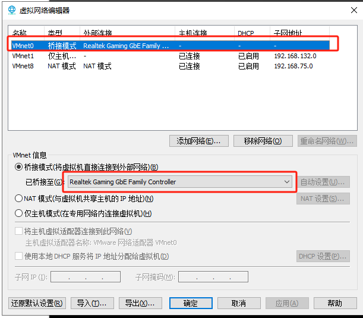
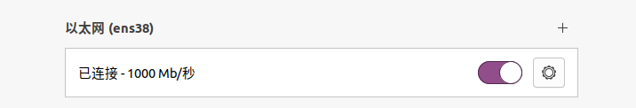
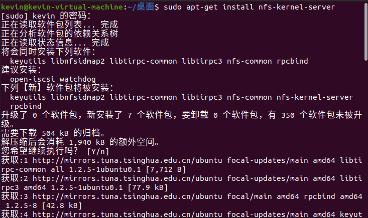
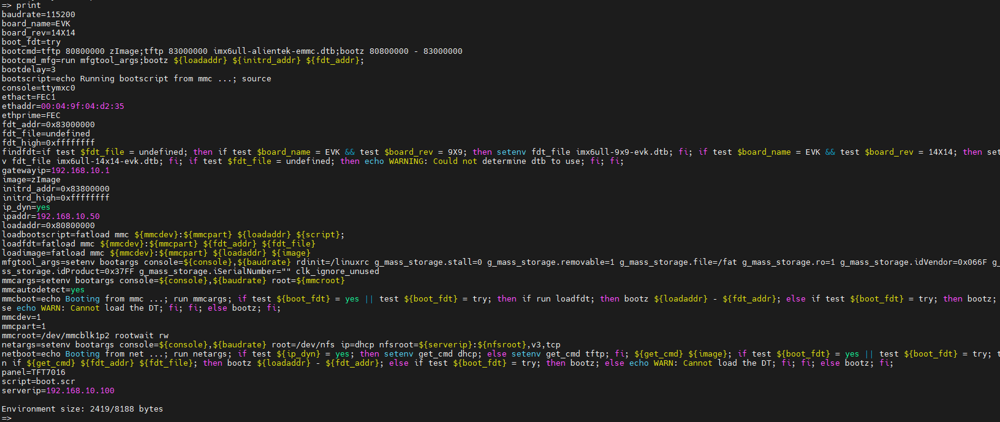

IMX6ULL开发板网络挂载教程
网络挂载教程
1.电脑WiFi 上网，开发板和电脑直连
1.1VMware 设置
1.1.1打开VMware Workstation Pro 里的 虚拟机 -> 设置
1.1.2设置网络适配器为桥接模式。这里不要勾选“复制物理网络连接状态”。
1.1.3因为电脑是WiFi上网，所以需要添加一个网络适配器并设置成NAT模式，供虚拟机上网。具体操作如下图所示。
1.1.4打开菜单栏的 编辑 -> 虚拟网络编辑器
1.1.5点击虚拟网络编辑器的更改设置选项。

1.1.6这个需要电脑管理员权限，如果有提示用户账户控制的提示框，点击是就可以了。
1.1.7重新打开虚拟网络编辑器，可以看到如下界面
如果没有VMnet0，可以手动添加下
1.1.8开发板是直连到电脑的网口的，所以需要虚拟网络编辑器里的网络适配器1（即VMnet0）桥接到有线网卡上，比如文档这里是Realtek Gaming，如下图：
1.1.9我们需要把网络桥接到这个网卡上，以下处理的都是VMnet0，用于桥接网络

1.2Ubuntu 设置
1.2.1启动虚拟机，打开Ubuntu的网络设置Network。
1.2.2在Windows终端没有看到VMnet0，在虚拟网络编辑器中可以看到。这是我们用来桥接的网络适配器，不会自动分配IP，需要手动设置。这里要注意，==VMnet0设置的网段不能和VMnet1、VMnet8的网段一样，不然会有冲突==
我们需要手动设置Ubuntu中桥接网络的IP

1.2.3这里我们将连接名称改为VMnet0，方便区别。将IP手动设置为192.168.10.100，子网掩码255.255.255.0

1.2.4，在Ubuntu联网上网时会默认使用桥接网卡，但这个网卡我们是用于连接开发板的局域网，不能连接公网使用。因此我们需要设置双网卡的优先级，让Ubuntu连接公网时使用NAT网卡。继续点击网络设置界面的Routes（路由），勾选Use this connection only for resources I its network选项，点击OK然后点击Save保存配置。
1.3开发板 设置
2.搭建TFTP环境
2.1安装和配置xinetd
1 | sudo apt-get install xinetd |
查询/etc/下是否存在xinetd.conf文件，没有的话则自己新建一个。
1 | ls /etc/xinetd.conf |
创建出来的文件是空白的，修改xinetd.conf文件内容如下：
1 | # Simple configuration file for xinetd |
2.2TFTP目录
1 | mkdir -p /home/kevin/MX6U/tftp |
2.3安装vim文件编辑器
1 | sudo apt-get update |
2.4tftp-hpa和tftpd-hpa服务程序
2.4.1执行以下程序安装tftp-hpa和tftpd-hpa服务程序
1 | sudo apt-get install tftp-hpa tftpd-hpa |

2.4.2执行以下指令打开tftpd-hpa配置文件，修改tftp目录为TFTP服务器工作目录
1 | sudo vim /etc/default/tftpd-hpa |
1 | /etc/default/tftpd-hpa |
2.4.3执行以下指令创建/etc/xinetd.d/tftp配置文件。
1 | sudo vim /etc/xinetd.d/tftp |
1 | server tftp |
2.4.4修改/添加tftp文件后，执行以下指令重启tftpd-hpa
1 | sudo service tftpd-hpa restart |
2.4.5重启xinetd服务
1 | sudo service xinetd restart |
3.搭建NFS环境
3.1安装NFS服务
在Ubuntu终端执行以下指令安装NFS。
1 | sudo apt-get install nfs-kernel-server |

3.2NFS共享目录
新建NFS共享目录，并给予NFS目录可读可写可执行权限
1 | sudo mkdir /home/kevin/MX6U/nfs |
3.3配置NFS服务
3.3.1执行以下指令打开etc/exports文件
1 | sudo vim /etc/exports |
3.3.2进入etc/exports文件，在最后添加如下内容
1 | /home/alientek/linux/nfs *(rw,sync,no_root_squash) |
意义：
/home/alientek/linux/nfs表示NFS共享的目录
*表示允许所有的网络段访问
rw表示访问者具有可读写权限
sync表示将缓存写入设备中，可以说是同步缓存的意思
no_root_squash表示访问者具有root权限。
3.3.3修改完以后保存退出,执行以下指令重启NFS服务器。
1 | sudo /etc/init.d/nfs-kernel-server restart |
3.3.4执行以下指令查看NFS共享目录
1 | showmount -e |
4.挂载教程系统
4.1内核文件准备
将光盘里的教程系统镜像中的==zImage==文件和==imx6ull-alientek-emmc.dtb==设备树拷贝到Ubuntu的==tftp==工作目录下。
4.2文件系统准备
在==nfs共享目录下==创建一个rootfs目录用于存放文件系统
1 | mkdir rootfs |
将跟文件系统放入其中
4.3TFTP挂载内核、设备树
4.3.1这里开发板拨码开关EMMC模式启动，进入uboot命令行，设置开发板的IP信息
首先为防止可能之前修改过环境变量而导致无法挂载，我们可以使用env default -a指令先清除环境变量。
1 | env default -a;saveenv |
4.3.2查看我们设置的变量：
1 |

4.3.3设置环境变量bootcmd来挂载tftp目录下的内核、设备树文件到开发板内存中。
1 | setenv bootcmd 'tftp 80800000 zImage;tftp 83000000 imx6ull-alientek-emmc.dtb;bootz 80800000 - 83000000' saveenv |
4.4NFS挂载文件系统
设置环境变量bootargs来挂载nfs共享目录下的rootfs文件系统到开发板内存中。
1 | setenv bootargs 'console=ttymxc0,115200 root=/dev/nfs nfsroot=192.168.10.100:/home/kevin/MX6U/nfs/rootfs,proto=tcp rw ip=192.168.10.50:192.168.10.100:192.168.10.1:255.255.255.0::eth0:off' |
环境变量已经设置好了，执行boot指令即可使用网络挂载系统。
4.5问题
原因：可能就是uboot支持的协议与NFS支持的协议不同导致报错，可以进行如下修改：
解决方案：
在ubuntu的/etc/default/nfs-kernel-server文件中，按照如下图箭头所指的部分进行修改，改完后保存退出
1 | sudo vim /etc/default/nfs-kernel-server |
重启NFS服务
1 | sudo service nfs-kernel-server restart |